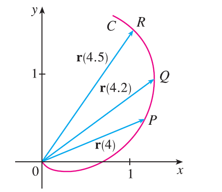

The figure shows a curve C given by a vector function \(\mathbf{r}(t)\). (a) Draw the vectors \(\mathbf{r}(4.5) - \mathbf{r}(4)\) and \(\mathbf{r}(4.2) - \mathbf{r}(4)\). (b) Draw the vectors \[ \frac{\mathbf{r}(4.5) - \mathbf{r}(4)}{0.5} \quad \text{and} \quad \frac{\mathbf{r}(4.2) - \mathbf{r}(4)}{0.2} \] (c) Write expressions for \(\mathbf{r}'(4)\) and the unit tangent vector \(\mathbf{T}(4)\). (d) Draw the vector \(\mathbf{T}(4)\).